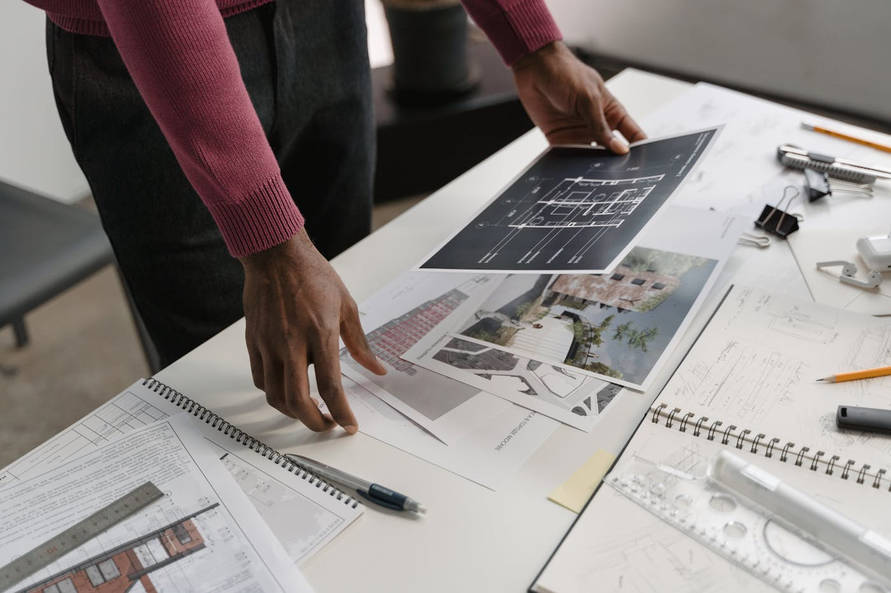
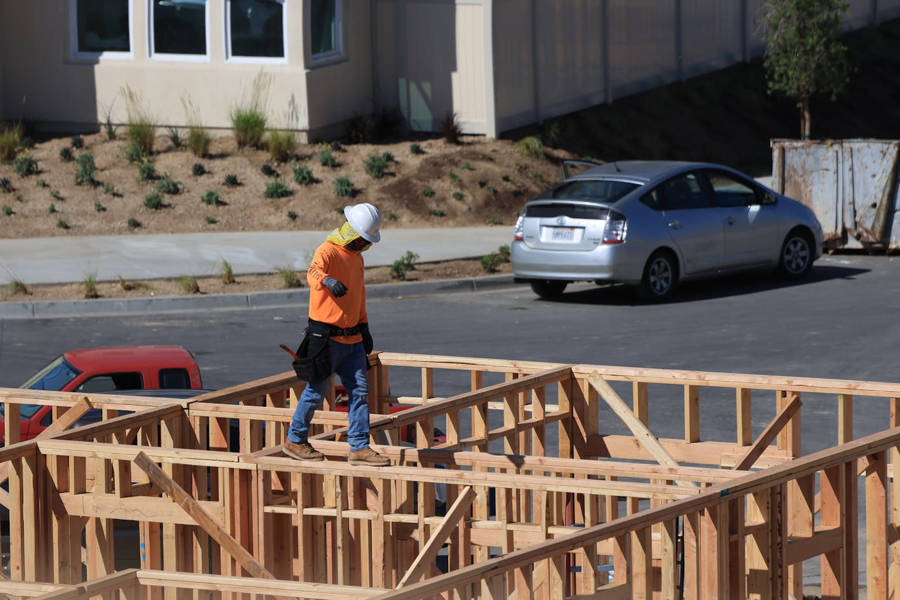
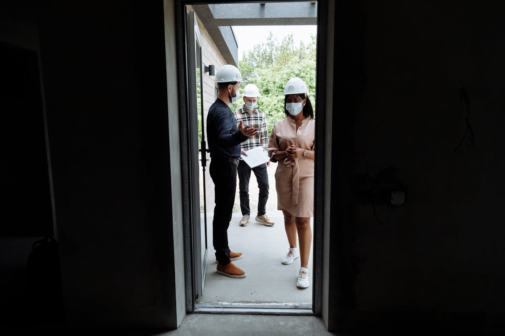

Quick answer: An NDIS builder in Sydney handles two distinct types of work: home modifications for existing participants (minor changes under $10,000 or complex structural modifications up to $80,000+), and new Specialist Disability Accommodation (SDA) purpose-built to the NDIS SDA Design Standard. Builders do not need formal NDIS registration to complete home modifications — a current NSW contractor licence and compliance with Australian Standard AS 1428 are the core requirements. SDA new builds require certification from an accredited SDA assessor before the dwelling can be enrolled with the NDIA.
“NDIS builder” has become a bit like “artisanal” at the supermarket — it appears on more websites than it used to, and the connection to any formal accreditation varies considerably from one business card to the next.
[Right. Straight face now.] Here is what the term actually means in NSW, what different types of NDIS building work involve, what it costs in Sydney in 2026, and how to verify you are engaging the right builder before you sign anything.
- What NDIS builders actually do
- The two types of NDIS building work
- Minor vs complex home modifications
- SDA design categories: which type applies
- What NDIS building work costs in Sydney
- The NSW approval and compliance process
- Building a purpose-designed SDA home from scratch
- SDA housing as an investment in Sydney
- When not to engage an NDIS builder
- Six questions to ask before you sign
- FAQ
What NDIS Builders Actually Do
An NDIS builder in NSW sits within one of two roles. The first is a builder who undertakes home modifications — physical changes to an existing property to improve accessibility and safety for a participant. The second is a builder who constructs Specialist Disability Accommodation, new-build housing designed to meet the NDIS SDA Design Standard.
These are distinct scopes of work with different regulatory requirements, different funding streams, and different client relationships. A builder fitting grab rails and converting a bathroom for a participant is operating under entirely different conditions than a builder delivering a purpose-built High Physical Support dwelling to a property developer in western Sydney.
Most of what is marketed as “NDIS building work” in Sydney falls into the modifications category. SDA new builds represent a smaller, more specialist market — and the gap in capability between a good modifications builder and a capable SDA developer is significant. They are not the same product.
The Two Types of NDIS Building Work

Photo via Pexels
Home modifications cover changes to an existing property that improve accessibility for a participant. They range from minor adjustments — grab rails, lever tap handles, threshold ramps, portable shower chairs — through to complex structural work such as widening doorways, installing ceiling-mounted hoist systems, converting bathrooms to roll-in wet rooms, or adding a ground-floor bedroom where none existed.
Modifications are funded through the participant’s NDIS plan under the Capacity Building — Home Modifications budget. An occupational therapist recommends the specific modifications, the NDIS approves funding, and then the participant engages a builder to complete the work.
SDA (Specialist Disability Accommodation) is purpose-built housing for participants who require specialist housing as part of their plan — typically those with extreme functional impairment or very high support needs. SDA is a completely separate NDIS funding stream. The NDIA pays SDA providers directly, not participants. The dwelling must be enrolled with the NDIA before SDA payments begin, and enrollment requires certification from an accredited SDA assessor confirming compliance with the SDA Design Standard.
Roughly 6% of NDIS participants are eligible for SDA funding. The demand for well-designed SDA housing in Sydney significantly exceeds supply across all four design categories.
Minor vs Complex Home Modifications
The NDIS classifies home modifications by cost, risk, structural impact, and complexity. The classification matters because it determines what evidence and approvals the NDIS requires before funding the work.
Minor home modifications — Category A: changes costing under $10,000 that do not affect the structure of the home. These are straightforward and do not require independent oversight by a building practitioner. Examples include grab rails in bathrooms and hallways, lever-style door and tap hardware, non-slip flooring treatments, handheld shower fittings, and portable access ramps. A qualified handyperson or licensed builder can complete this work.
Minor home modifications — Category B: modifications costing $10,000–$20,000, or any modification involving bathroom floor work regardless of cost. Still classified as minor, but additional documentation is required before the NDIS will fund the work.
Complex home modifications: structural changes or work requiring custom technical design. Widening a doorway by removing a non-load-bearing wall is complex. Installing a ceiling hoist on a structural track is complex. Converting a standard bathroom to a fully accessible wet room with a roll-in shower — meeting the AS 1428.1 minimum shower base dimensions of 1,160mm × 1,100mm — typically crosses into complex territory. Complex modifications require at least two itemised quotes or a detailed cost estimate, plus independent oversight by a licensed building practitioner.
The occupational therapist’s assessment drives the whole process. The OT recommends what the participant needs; the NDIS planner approves the funding category; the builder prices and delivers. A builder who skips the OT step and tries to scope modifications directly is creating a documentation problem that lands on the participant later.
SDA Design Categories: Which Type Applies
The NDIS SDA Design Standard defines four categories of Specialist Disability Accommodation, each designed for a different population of participants. Builders working in the SDA space need to understand which category applies to the project before design begins — because the structural and design requirements differ materially between them.
Improved Liveability targets participants with sensory, intellectual, or cognitive impairments. The design focus is on improving physical access while reducing cognitive load: better natural lighting, acoustic design that reduces sensory overload, clear wayfinding, and reduced visual complexity. This is the most common SDA category and requires a solid design response to each specific participant’s needs.
Fully Accessible is designed for participants with significant physical disability who require full wheelchair access throughout the entire dwelling. Full access to all areas — including kitchen, all bathrooms, laundry, and outdoor spaces — is required. Corridor widths, turning circles, reach ranges, and accessible fitout are all specified under the standard.
Robust housing prioritises durability, safety, and resilience for participants with complex or challenging behaviours — often serving people with autism spectrum disorder or psychosocial conditions. The structure must withstand higher levels of wear: impact-resistant surfaces and wall linings, secure external spaces, reinforced fittings, and design that reduces ligature and self-harm risk. A Robust dwelling looks and costs different from a Fully Accessible one.
High Physical Support is designed for participants with significant physical disability requiring very high levels of support and assistive technology. Structural provisions include ceiling-mounted hoist tracks throughout the dwelling, backup power for life-support equipment, emergency call systems, and home automation compatible with assistive technology. This is the most expensive SDA category to build and attracts the highest NDIS payment rates.
From 1 July 2021, all SDA dwelling enrollment applications must include certification from an accredited third-party SDA assessor confirming the dwelling meets the standard for the relevant category. The assessor signs off after practical completion, not before. A builder who is unfamiliar with this process — or who assumes a standard building certifier can cover this requirement — will create delays at the most expensive point in the project.
What NDIS Building Work Costs in Sydney

Photo via Pexels
Home modification costs in Sydney in 2026:
| Modification Type | Typical Cost Range |
|---|---|
| Grab rails (bathroom and hallway) | $800 – $2,500 |
| Threshold ramp (external access) | $1,500 – $5,000 |
| Lever hardware and accessible fittings | $1,200 – $3,500 |
| External ramp with structural supports | $8,000 – $20,000 |
| Full accessible bathroom conversion | $15,000 – $35,000 |
| Doorway widening (non-structural) | $3,000 – $8,000 |
| Ceiling hoist installation (structural track) | $18,000 – $45,000+ |
| Ground-floor bedroom addition (complex) | $60,000 – $120,000+ |
SDA new-build costs in Sydney (metropolitan) in 2026:
| SDA Category | Typical Build Cost | Annual NDIS Payment (indicative, 1 participant) |
|---|---|---|
| Improved Liveability | $420,000 – $600,000 | $22,000 – $35,000 |
| Fully Accessible | $500,000 – $720,000 | $32,000 – $48,000 |
| Robust | $550,000 – $780,000 | $45,000 – $65,000 |
| High Physical Support | $700,000 – $1,100,000+ | $75,000 – $110,000+ |
SDA build costs sit above standard residential construction because of structural provisions specific to each category — hoist tracks, impact-resistant linings, backup power systems, and specialist accessible fitout. The land cost in Sydney is separate. A High Physical Support dwelling on a 400m² western Sydney block, land included, will typically exceed $1.5M all-in before SDA management fees. This is not a complaint. It is arithmetic.
The NSW Approval and Compliance Process
Home modifications in NSW generally do not require council approval if they are non-structural and do not change the building’s footprint. Structural modifications — removing walls, adding extensions, building external ramps attached to the building — may require a development application or a Complying Development Certificate, depending on the work and the lot. The NSW Planning Portal can help determine which path applies to a specific property.
For SDA new builds, the planning pathway follows the same DA or CDC process as standard residential construction in NSW. Additional requirements sit on top of the standard process: the design must comply with the NDIS SDA Design Standard for the relevant category, the National Construction Code accessibility provisions must be met, and the completed dwelling must be enrolled with the NDIA via the SDA online provider portal.
Enrollment cannot happen until practical completion and SDA assessor sign-off. That certification step typically takes three to six weeks after construction finishes. Budget it into the project programme. Builders who have not done this before consistently underestimate the time between practical completion and the first SDA payment arriving.
All builders and tradespeople completing NDIS-funded work in NSW must hold the relevant NSW contractor licence. Check any builder’s licence on the NSW Fair Trading licence register before engaging them. NDIS registration status and NSW contractor licence status are separate records — both worth verifying.
Building a Purpose-Designed SDA Home from Scratch
Most content about NDIS builders focuses on modifying existing properties. The option of building a completely new home purpose-designed for a specific participant — or for a specific SDA category — gets considerably less attention, which is a gap worth addressing.
A purpose-designed new build offers advantages no renovation achieves in full. Structural provisions can be integrated from the slab up: ceiling hoist tracks without compromise to ceiling height, corridor widths that meet or exceed the standard without cutting into room sizes, bathroom geometry that is accessible from first principles rather than adapted from a standard layout. The result is a home that functions for its occupants rather than one that has been adjusted to accommodate them.
For families building on their own land — particularly where an existing dwelling is being replaced — a custom SDA new build on a knockdown-rebuild basis is often the most cost-effective way to achieve a genuinely accessible home. The design starts with the participant’s specific needs rather than a standard floor plan. Our guide to building a new home in Sydney covers the construction process in more detail for those starting from scratch.
The builder for this scope needs a clear understanding of the SDA Design Standard, experience working with SDA assessors, and the ability to manage the design process with accessibility consultants from the brief stage. A volume builder adapting a standard plan to a disability brief is a different product. The gap shows up in the finished home.
SDA Housing as an Investment in Sydney

Photo via Pexels
Sydney has a significant shortage of SDA-compliant housing relative to the number of NDIS participants approved for SDA funding. Property investors and developers who build SDA dwellings on appropriately zoned land access NDIS SDA payments as the primary income stream — payments that come directly from the NDIA rather than an individual tenant and are indexed to the NDIS pricing review annually.
The investment case warrants scrutiny before commitment. SDA property requires a specialist disability housing provider to manage the tenancy and ongoing compliance. Matching participants to dwellings takes time — vacancy during matching does not generate SDA payments. The dwellings must meet the SDA Design Standard for a specific category, which constrains future use if the SDA market shifts. And the compliance obligations continue well beyond settlement.
Sydney investors who have done this well typically combine a clear understanding of local participant demand by SDA category (High Physical Support demand in western Sydney has historically exceeded supply), a builder with genuine SDA construction experience, and a specialist SDA tenancy manager secured before the project starts. Those who have done it poorly generally started with the investment return projection and worked backwards. The yield calculation looks compelling until it does not. See our duplex builders Sydney guide for related context on multi-dwelling development economics in NSW.
If you own land in Sydney and are evaluating SDA as a development pathway, the first conversation is with an SDA specialist who understands local participant demand — not a generalist builder. Once the viability analysis is complete, a builder with SDA experience is essential. Our team at TURYN can advise on accessible design and new builds for participants and investors looking to build in Sydney.
When Not to Engage an NDIS Builder
This section is the one most guides skip. We are not most guides.
Do not engage a builder marketed as an “NDIS builder” for work that is not NDIS-funded. The designation implies compliance overhead and specialist positioning — not a lower price. If you need a standard bathroom renovation or a rear extension with no accessibility requirement, a general residential builder through a normal quoting process is the right approach. The NDIS-specific overhead does not add value to non-NDIS work.
Do not assume NDIS registration equals quality or experience. Registration with the NDIS Quality and Safeguards Commission means the builder has met administrative compliance requirements. It does not guarantee workmanship, project management capability, or familiarity with the specific modification type you need. A builder registered for minor home modifications may have no experience with complex structural work or SDA construction. Verify the NSW contractor licence and ask specifically about comparable completed projects.
Do not engage a builder for NDIS-funded modifications before the scope of works has been approved in the participant’s NDIS plan. Builders who proceed on assumed approvals — or who encourage clients to proceed ahead of plan approval to avoid delay — create disputes with the NDIA that can take months to resolve and sometimes result in costs that fall to the participant. The approval comes first. The builder comes second.
Do not use an NDIS builder to design the modification scope. That role belongs to the occupational therapist. A builder who positions themselves as being able to assess what a participant needs, quote the work, and deliver it without an independent OT recommendation is collapsing a check that exists for good reason. The OT assessment protects the participant. It also protects the builder.
Six Questions to Ask Before You Sign
Ask these before the first phone call becomes a committed relationship. The right time to learn a builder is unsuitable is not after three good meetings.
- Do you hold a current NSW contractor licence, and is it current for the type of work required? Verify the licence number on the NSW Fair Trading register. The licence should be current and in the company’s trading name. A licence that expired three months ago is not a minor administrative oversight.
- Can you provide references from two or three NDIS-funded projects similar to this one? A builder experienced in grab rail installations is not automatically experienced in ceiling hoist systems or SDA construction. References from comparable projects matter more than years in business generally.
- How do you manage the NDIS quoting and invoicing process? NDIS-funded modifications require compliant quotes and invoicing within NDIS price limits. A builder who is unfamiliar with this process will create administrative problems that the participant’s support coordinator has to clean up.
- Who is your regular SDA assessor or building certifier for compliance sign-off? (Relevant for SDA new builds.) The answer to this question reveals whether the builder has an established working relationship with the compliance process or is encountering it for the first time on your project.
- Are the trades you use familiar with Australian Standard AS 1428 requirements? Accessible design under AS 1428 has specific dimensional requirements — shower bases, corridor widths, door clearances, ramp gradients — that differ from standard residential practice. A plumber who has never installed an accessible shower to spec will cause the work to fail assessment.
- What happens if the completed work does not pass NDIS compliance or SDA assessor sign-off? A builder who has not thought about this question is one who has not been through the process. A builder with experience will have a clear answer about defects liability and rectification.
Six questions. For home modifications funded through an NDIS plan, or an SDA build funded by an investor’s capital, each one is worth the time. See our broader guide to choosing a custom home builder in Sydney for the questions that apply across all residential building work.
FAQ
Does a builder need to be NDIS registered to do home modifications in NSW?
For standard home modifications, no formal NDIS registration is required. The builder must hold a current NSW contractor licence and comply with the relevant Australian Standards. NDIS registration gives builders visibility on the NDIS provider database, which helps participants find them, but it is not a legal requirement for completing funded modification work. Verify the NSW contractor licence on the NSW Fair Trading register regardless of registration status.
What home modifications does the NDIS fund?
The NDIS funds modifications that are reasonable and necessary for a participant to achieve their plan goals — from minor adjustments (grab rails, lever handles, threshold ramps, accessible tap fittings) through to complex structural work (widening doorways, installing ceiling hoists, converting bathrooms to roll-in wet rooms). Modifications must be recommended by an occupational therapist and linked to the participant’s NDIS plan. General home improvement unrelated to disability need is not funded.
What is the NDIS SDA Design Standard?
The SDA Design Standard is the set of design and construction requirements for Specialist Disability Accommodation — purpose-built housing for participants with extreme functional impairment or very high support needs. Introduced on 1 July 2021, it applies to all new SDA dwelling enrollments. It defines four categories — Improved Liveability, Fully Accessible, Robust, and High Physical Support — each with specific structural and design requirements. Compliance must be certified by an accredited SDA assessor before a dwelling can be enrolled with the NDIA.
What is the difference between minor and complex home modifications?
Minor modifications do not affect the structure of the home. Category A costs under $10,000; Category B costs $10,000–$20,000 or involves bathroom floor work. Complex modifications affect the structure or require custom technical work — removing walls, installing hoists, or major bathroom conversions. Complex modifications require independent oversight by a licensed building practitioner and at least two itemised quotes before the NDIS funds them.
How much do NDIS home modifications cost in Sydney?
Minor modifications typically run $800–$10,000 depending on type. A full accessible bathroom conversion (roll-in shower, accessible vanity, structural modifications to meet AS 1428 requirements) costs $15,000–$35,000. External structural ramps run $8,000–$20,000. Ceiling hoist installations cost $18,000–$45,000+. Quotes must be itemised and within NDIS price limits. The NDIS funds the reasonable and necessary portion — any upgrade beyond functional need is at the participant’s own cost.
Can a new home be built as NDIS SDA housing in NSW?
Yes. Property owners, investors, and developers can build new SDA-compliant dwellings on appropriately zoned land in Sydney. The dwelling must be designed to the relevant SDA Design Standard category and certified by an accredited SDA assessor before enrollment with the NDIA. Once enrolled, the dwelling qualifies for NDIS SDA payments, which are indexed annually and represent the primary income stream for SDA providers. Build costs for Sydney SDA dwellings typically range from $420,000 to $1.1M+ depending on category and configuration.
How do I find a qualified NDIS builder in Sydney?
Start with the NDIS provider database for registered providers, and verify any builder’s NSW contractor licence on the NSW Fair Trading register. Ask specifically about experience with the modification type or SDA category you need. References from completed NDIS projects, familiarity with the quoting and approval process, and knowledge of AS 1428 are all worth verifying before engaging. The TURYN team works with participants, families, and investors on accessible design and new builds across metropolitan Sydney.
What Australian Standards govern accessible design for NDIS builds?
Australian Standard AS 1428.1-2009 specifies minimum requirements for access and mobility in buildings, including accessible shower base dimensions (minimum 1,160mm × 1,100mm), corridor widths, door clearances, and ramp gradients. For enhanced accessibility requirements, AS 1428.2 applies. The National Construction Code incorporates accessibility provisions that apply to all new residential construction. SDA new builds must additionally comply with the NDIS SDA Design Standard for the relevant category, which sits above and alongside the NCC requirements.